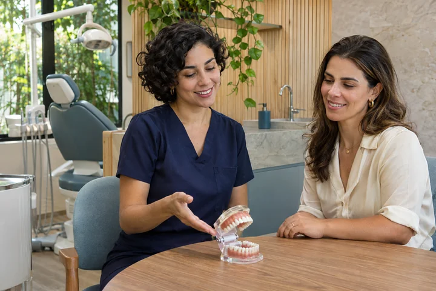
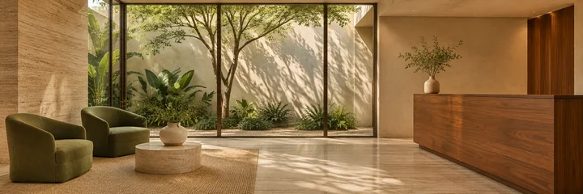

Entenda antes de decidir.
Na primeira consulta da Odonto Premium, você conta o que mudou, entende o que será avaliado e conversa sobre as opções de cuidado.
Por que você está procurando um dentista?

- Escolher
Primeira avaliação
Para quem está chegando à clínica, percebeu alguma mudança ou quer entender por onde começar.
- Escolher
Consulta de rotina
Para quem quer retomar o acompanhamento e conversar sobre a rotina de cuidados.
- Escolher
Avaliação para alinhadores
Para quem tem dúvidas sobre posição dos dentes e quer conversar sobre as alternativas.
Como é a sua primeira consulta
Você pode começar contando o que está incomodando ou o que gostaria de mudar.
Ouvimos o seu motivo
O que você percebeu, o que já foi feito e o que espera entender na visita.
Explicamos a avaliação
O dentista conversa com você sobre o que precisa observar e por que isso importa.
Combinamos o que vem depois
Se houver opções, converse sobre etapas, valores e prazos antes de decidir.

Recepção da Odonto Premium. Antes da avaliação, você pode conversar com a equipe sobre o motivo da visita.
Dúvidas antes de marcar
Faz tempo que não vou ao dentista. Por onde começo?
Escolha Primeira avaliação. Você pode contar há quanto tempo foi a última consulta e o que motivou a visita agora.
A avaliação já inclui um procedimento?
O pedido é para uma avaliação. Se houver indicação de um procedimento, a equipe explica o que ele envolve e combina os próximos passos.
O que vale levar?
Se tiver exames ou informações de tratamentos anteriores, leve o que estiver à mão. Anote também as perguntas que quer fazer.
Quando a consulta fica marcada?
Depois do pedido, a equipe entra em contato para combinar data e horário. O período escolhido é para o retorno.
Vamos marcar uma conversa?
Você escolhe quando é mais fácil receber o retorno. A equipe conversa com você para combinar a consulta.
Pedir avaliação
Escolha o atendimento e diga quando é mais fácil falar com você.
Pedido simulado
- Protocolo de teste
- Atendimento
- Período para retorno
Em um atendimento real, a equipe entraria em contato para combinar a consulta.